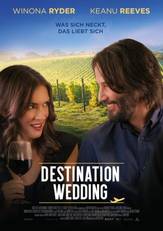

#9697 Destination Wedding
 
 IMDB-Wertung: 6.0 / 10
IMDB-Wertung: 6.0 / 10  Tomatometer: 51
Tomatometer: 51  Metascore: 46
Metascore: 46 
72 Stunden im Paradies wären wunderbar – wenn diese Hochzeit nicht wäre. Dort treffen Frank und Lindsay erstmals aufeinander. Sie haben vieles gemeinsam: Beide hassen die Braut, auch den Bräutigam, die Hochzeit, sich selber und – was bald klar wird – vor allem den jeweils anderen. Das unerbittliche Unterhaltungsprogramm des mehrtägigen Festes lässt sie immer wieder aufeinanderprallen. Doch unweigerlich steigt mit jedem Streit die gegenseitige Sympathie, die Anziehung zwischen den beiden ist nur schwer zu ignorieren. Und so müssen Frank und Lindsay eine Entscheidung treffen: für die aufkeimende Liebe – oder den gesunden Menschenverstand.
Jahr: 2018
Dauer: 86 Minuten
FSK: 12
Land: USA Studio: RegattaTonspuren:
Untertitel: Deutsch,
Auflösung: 1080p (1916x800) Größe: 3092 MB
Genre: Drama, Komödie, Liebe
Regisseur: Victor Levin
Drehbuch: Victor Levin
Soundtrack: William Ross
Darsteller:
 Keanu Reeves als Frank
Keanu Reeves als Frank Winona Ryder als Lindsay
Winona Ryder als Lindsay- Dj Dallenbach als Bride
- Greg Lucey als Frank's Stepfather
- D. Rosh Wright als Frank's Mother
- Ted Dubost als Groom
- Donna Lynn Jones als Frank's Stepfather's Girlfriend
- James Gallardo als Upright Double Bass Player
- Michael Mogull als Wedding Officiant
- Curt Dubost als Father of the Bride
- Sean Sullivan als Conga Drum Kit Player
- Scott Andrews als Tenor Sax Player
Datei: X:\2018(A-F)\Destination Wedding (2018, FSK12, 1916x800).mkv seit 05.10.2018
Festplatte: HD 2017(A-Z)-2018(A-F)
 Es gibt insgesamt 151 Filme in der Gruppe '2018(A-F)'
Es gibt insgesamt 151 Filme in der Gruppe '2018(A-F)'